JACKZ DOG GEAR
Explore. Train. Connect. Frustration free.
Dog gear and barn hunt training in Northwest Arkansas.
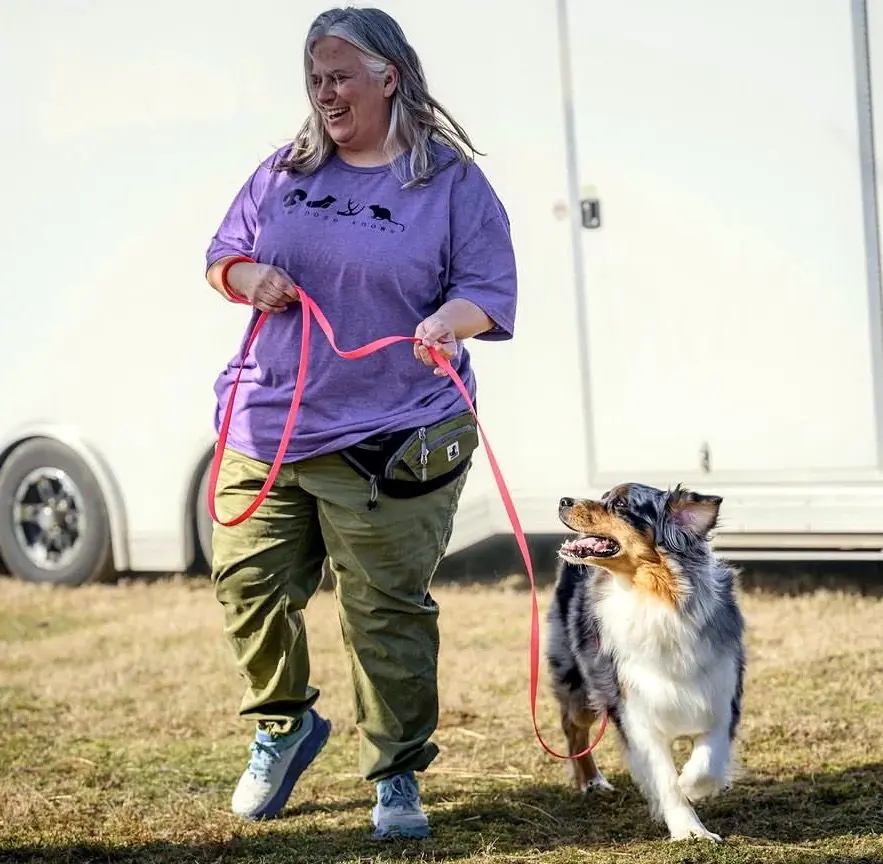
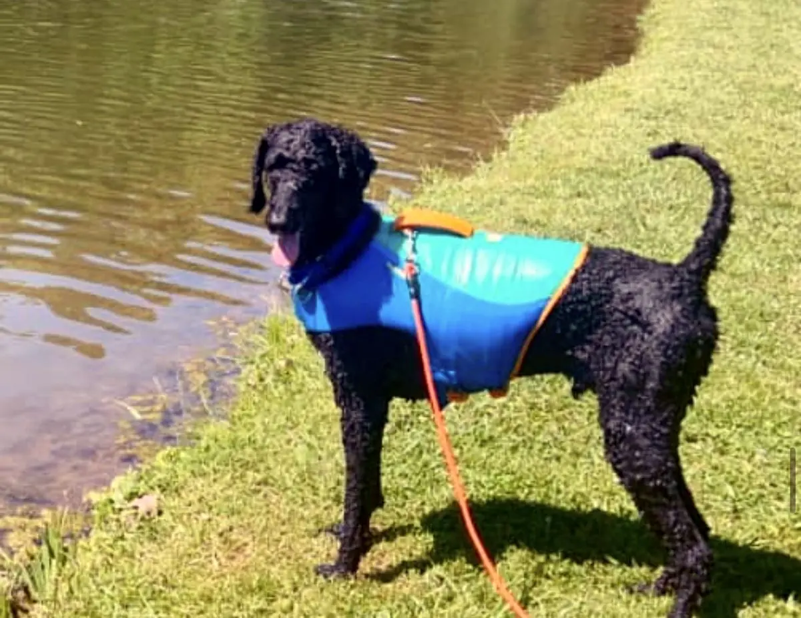
When Dog Walks Feel Like Work
You’re ready to head out the door - perfect weather, a little adventure ahead, and your favorite pup by your side.
You reach for your leash from the last outing… and pause. It never quite recovered. It still carries the memory of muddy trails, wet grass, and one too many splashes in the creek along with a smell you’d rather not think about. Not exactly what you want to hold in your hand.
Then you grab your treat pouch… only to discover you forgot about those cheese cubes from your last training session. What’s left behind is no longer recognizable and definitely not something you’re excited to clean out.
Suddenly, this simple, joyful moment feels harder than it should. You’re stuck between the hassle of gear that didn’t hold up and the excitement of getting out there with your dog.
And still… your pup is waiting. Hopeful. Ready. Looking back at you like this is the best moment of their day.
Because it should be that simple.
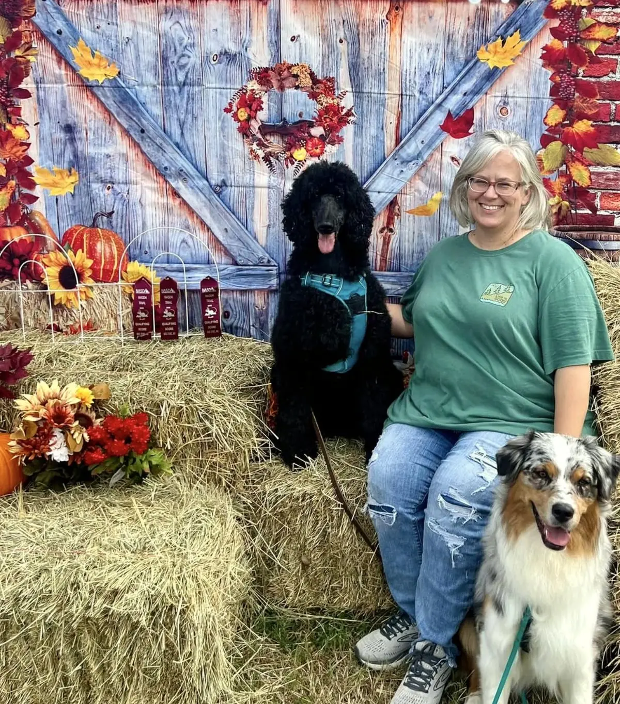
Meet Courtney
For 35 years, I've lived with and trained dogs in a variety of sports. My current crew includes three standard poodles and an Australian shepherd. We train in AKC scentwork, Barn Hunt, NASDA, Dock Diving, and Rally. We also enjoy splashing in swimming holes, decompression walks and games that help with the big feelings that can occur when navigating the world.
After going through more dog gear than I can count, I realized I needed something made for the everyday, slightly forgetful dog person like me who just wants things to be simple, easy, and leave more time for what actually matters…being with my dog.
I built Jackz because affordable, quality gear and accessible training should be available to every dog lover.
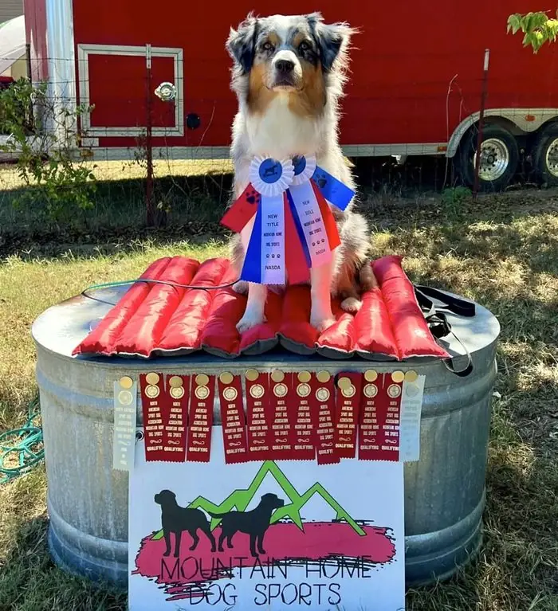
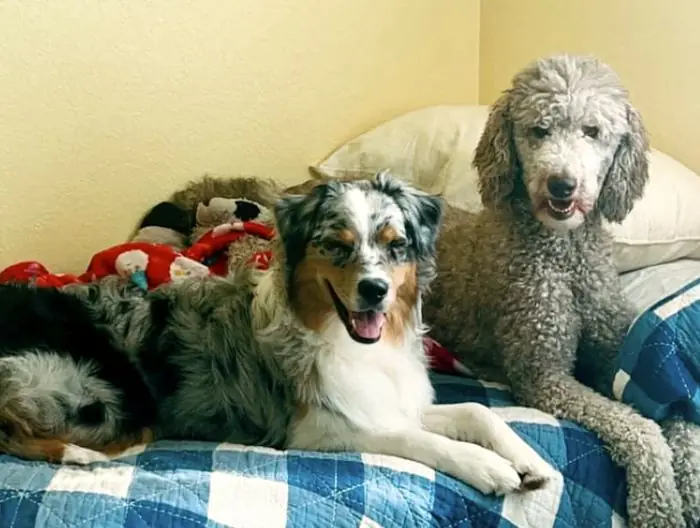
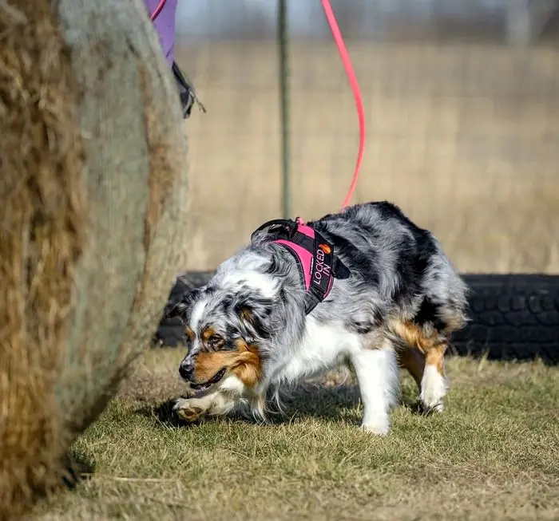
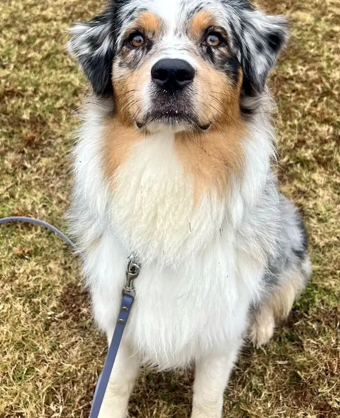
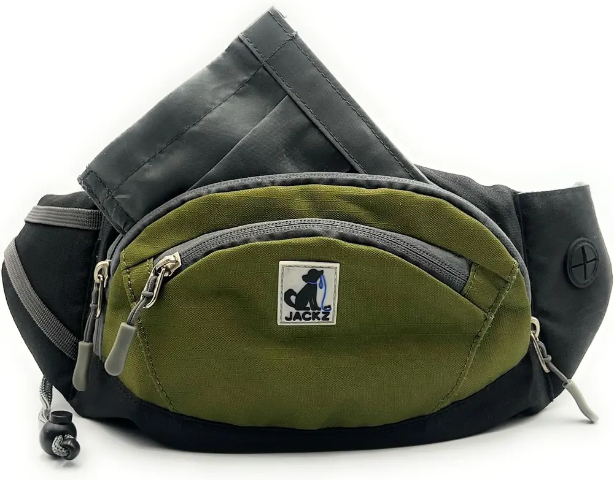
The Jackz Treat Bag
- Durable.
- Easy to clean.
- Built for adventure and the busy (and sometimes forgetful) handler.
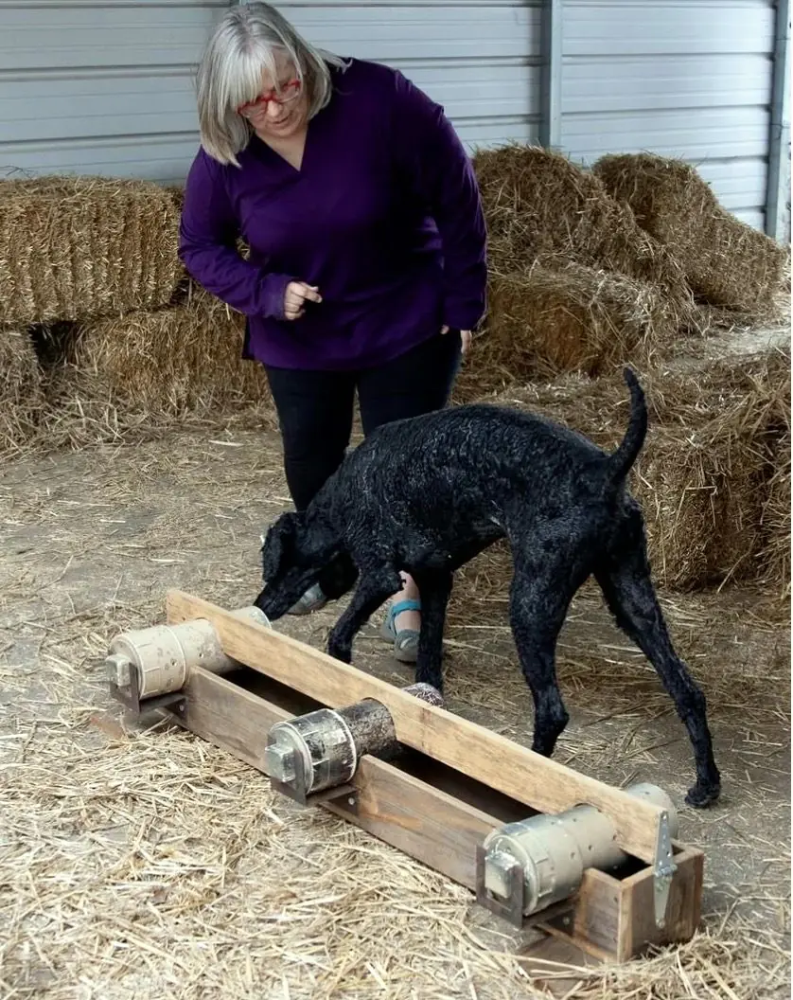
Want More Than Just Gear?
We also offer classes that feel easy to step into: welcoming, judgment-free. There is no pressure to be perfect. Just a place where you and your dog can learn together.
We lean into what your dog already is at heart - their instincts, their curiosity, their love of using their nose and brain. We give those things a positive outlet. Everything is introduced thoughtfully and at a comfortable pace with a focus on curiosity, confidence and connection. Meeting the dog where they are based on temperament, motivation, and comfort level.
- Curiosity
- Confidence
- Connection
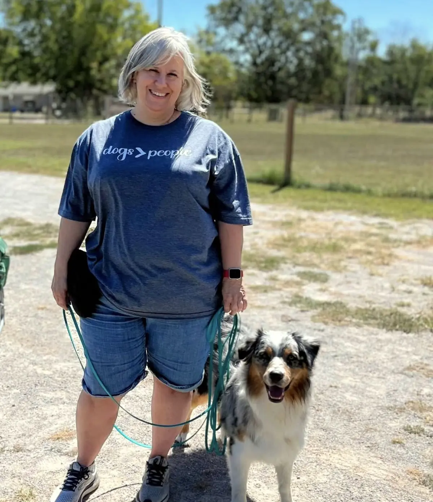
Build a Stronger Bond With Your Dog
- A stronger bond.
- Confidence as a handler.
- A happy, enriched dog.
- Understanding what your dog is trying to tell you.
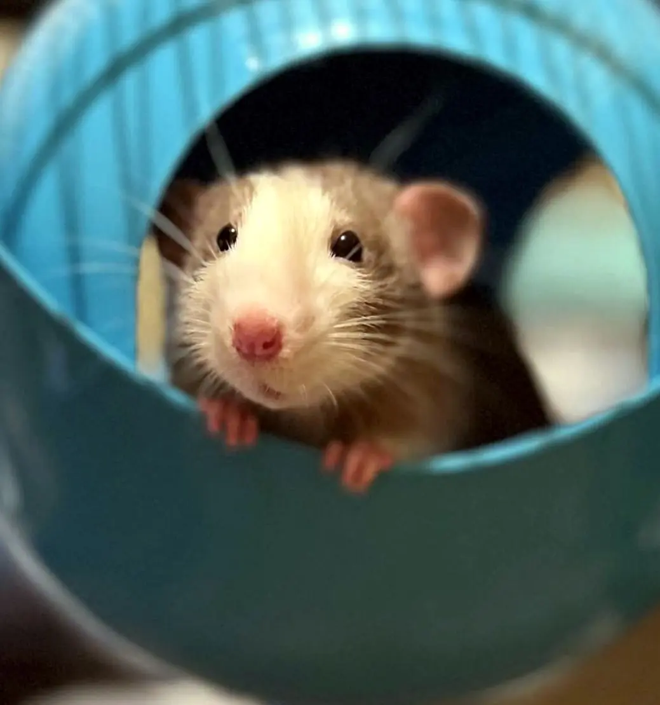
Frequently Asked Questions
Jackz Dog Gear Questions
How is the Jackz Treat Bag different from other treat pouches?
It's built for muddy paws and slobber. Most treat pouches break after a few walks or become impossible to clean. The Jackz bag is durable, easy to wash, and designed for real life with real dogs.
Can I use the Jackz bag for multiple dogs?
Yes. The bag holds enough treats for training sessions with multiple dogs and cleans easily between uses.
Barn Hunt Training Questions
What is barn hunt training?
Barn hunt lets your dog use their natural hunting instincts to find rats (safely contained in tubes) hidden in straw bales. It builds confidence, mental stimulation, and strengthens your bond.
Is barn hunt only for certain breeds?
No. From poodles to Pomeranians, any dog can participate. It's about using their nose, not their size or breed.
I've never done dog sports before. Can I still join?
Absolutely. Training is beginner-friendly and judgment-free. Whether you're a seasoned handler or just getting started, you'll get the support you need.
Where are classes held?
Classes are held in Northwest Arkansas.